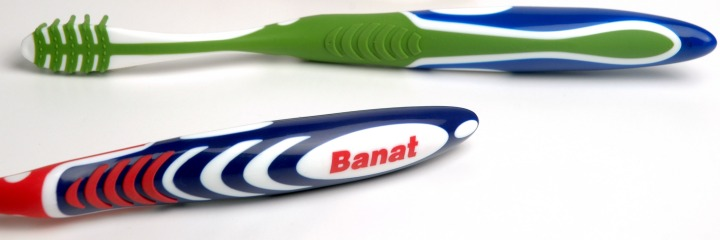

|
Ergonomik analizler için Pro/ENGINEER yazýlýmýnýn bu iþe özgü modüllerini de kullandýnýz mý?
Murat Armaðan: Evet. Ergonomik analizler için Pro/ENGINEER ile yaptýðýmýz tasarýmlarýn içerisine insan modelleri yerleþtirerek yerleþim, yolcu hareketi gibi konularda denemeler yaptýk. Bu konuda otomobil teknolojisinde kullanýlan analizlerden faydalandýk.
Projeyi tanýtmak için yapýlan animasyonlarda hangi program kullanýldý?
Murat Armaðan: Bu animasyonlar 3ds max, After Effects, Maya gibi programlarda yapýldý. Bunun için dýþarýdan da destek alýndý
Tanýtým videosu: T-Design_Deniz-Taksi.mpg (15MB)
Fiziksel modelleri nasýl yaptýnýz?
Murat Armaðan: Öncelikle aldýðýmýz ölçekli projelerden üzerinde çizgi ve fonksiyon denemeleri yapacaðýmýz ölçekli maketler hazýrladýk. CNC tezgahlarda çift poliüretan model malzemeleri iþleyerek ölçekli hassas modeller oluþturduk, bunlar üzerinden bazý ön testleri yapmaya baþladýk. Bu süreçte hýzlý prototip (3D printing) teknolojilerini pek kullanmadýk.

1:1 Ölçekli ilk maketi imal etmek için hangi teknolojileri kullandýnýz?
Murat Armaðan: Öncelikle tek eksenli tezgahlarda keserek bir þablon seti oluþturduk. Blok maket malzemesi üzerinde yaptýðýmýz iþlemleri bu hassas þablonlarla kontrol ettik . Bu oldukça pratik, ayný zamanda da ekonomik. Deneme maketleri için en doðru çözüm. Bunun yanýnda posta noktalarýndan aldýðýmýz kesitleri yine tek eksenli tezgahta keserek parçalarý bir omurga üzerinde topladýk. Sonra esnek PVC malzemelerle giydirerek hafif gövde maketleri oluþturduk.
Tersine mühendislik - 3D tarama teknolojileri kullandýnýz mý?
Murat Armaðan: Yapýlan 1:1 ölçekli prototip üzerinde testler sonrasýnda bazý revizyonlar yapýldý. Bunlarýn yeniden 3D CAD ortamýna aktarýlmasý için lazer mesafe ölçücülerden yararlanýlarak bazý kritik koordinatlar ölçüldü.
Yurt dýþýndan da ilgi görüyor musunuz? Sipariþ aldýnýz mý?
Murat Armaðan: BAE-Dubai, Hýrvatistan, Almanya, Hollanda ve Rusya gibi ülkelerden ciddi olarak ilgi var bu ülkelerde yoðun görüþmelerimiz söz konusu.
Kariyerini ürün geliþtirme konusunda yapmak isteyen gençlere tavsiyeleriniz nelerdir?
Murat Armaðan: Mevcut üretim koþullarý, ekonomik veriler her zaman sýnýrlayýcýdýr. Bu koþullarý çok iyi öðrenip bunun üzerinden daha avantajlý ürün geliþtirebilen baþarýlý olacaktýr. Bir ürünün piyasaya sunulma zamaný ve sunulduðu yer, ürünün kaderi için belirleyicidir. Hangi zamana ve kimin için ürün yapýldýðýný iyi sorgulamak gerekir. Mevcut üretim koþullarýný çok iyi öðrenmek ve bu koþullara göre daha iyi ürün geliþtirebilmek bir baþarý anahtarý olduðu gibi, yenilikçi yaklaþýmla koþullarý zorlayarak ürün tasarlamak her zaman rekabet yönüyle önde olacaktýr.
Ýyi bir ürün geliþtirmeci hangi projeyi kotarmasý gerektiðini, hangi proje ile koþullarý zorlayarak riske gireceðini hesaplayabilir. Bunun için en önemli güç deneyimdir ve mesleki seçim ne kadar erken yapýlýr ve yoðun çalýþýlýrsa o kadar fazla deneyim biriktirilir. Bu alanda çalýþan kiþilerin en önemli sermayesi budur.
Kunter Þekercioðlu, Kilit Taþý Tasarým Mimarlýk Ltd.
www.kilittasi.com
Kendinizden kýsaca bahseder misiniz?
Kunter Þekercioðlu: 1996-2002 yýllarý arasýnda freelance ürün tasarýmý yaptým. 2002 yýlýndan beri aðabeyim Taner Þekercioðlu ile ortak olduðumuz þirketimizde çalýþýyorum. Bursa ve Ýstanbul'da ofislerimiz var. Bursa'daki ofisimiz iç mimarlýk ve dekorasyon yoðunluklu çalýþýyor. Endüstri ürünleri tasarýmý iþlerimiz ise Ýstanbul yoðunluklu...
Standýnýzda görüldüðü üzere BANAT için tasarladýðýnýz iki çeþit diþ fýrçasý var; EXCLUSIVE ve TRI-ACTION. EXCLUSIVE diþ Fýrçasý Projesi nasýl baþladý? ne kadar sürdü?
EXCLUSIVE diþ fýrçasý geliþtirme projesi 1,5 yýl sürdü. Bu, iki plastik komponentin bir arada kullanýldýðý bir ürün. Ýki komponent zaten Türkiye'de çok kullanýlan bir teknoloji. Yýlladýr Banat da bu tür üretim yapýyordu. Fakat modellerinin biraz güncellenmesi gerekiyordu. Firma daha üst segmente hitap eden yeni bir ürün üretmek arzusundaydý...
TRI-ACTION modelinin tasarýmý hakkýnda bilgi verir misiniz?
Bu ürün, elin direkt kavradýðý bir diþ fýrçasý. Bunu tasarlamak için uzun çalýþmalar yürütüldü. Baþparmak nerede duracak? Diðer parmaklar nasýl kavrayacak? Doðru diþ fýrçalama tekniði nedir, süpürme tekniði nedir, bunlar göz önünde bulundurularak "fýrçanýn ergonomisi nasýl olmalýdýr?" sorularýnýn cevaplandýrýlmasý ile aþama aþama detaylandýrýldý.
Bu modelde dikkat ederseniz PP arasýna enjekte edilmiþ kauçuk (TPRs) malzeme, fýrçanýn kolay tutulmasýný saðladýðý gibi fýrçanýn kenar kýsýmlarýndaki diþ etlerine masaj yapacak 10 adet esnek çubuðu da oluþturuyor. Ayný kauçuk malzeme, fýrça sýrtýnda ise pürüzlü bir yapý oluþturacak þekilde tasarlandý. Sýrttaki bu küçük dokunun amacý dil temizlemesi; bu, toplumumuzun pek alýþtýðý bir durum deðil ama diþ doktorlarý tavsiye ediyor. Tüm bu ek özellikler BANAT'ý pazarda daha güçlü konuma getiriyor.
Bu modelin tasarýmýnda ergonomi, fonksiyonellik ve estetik kriterlerin yaný sýra 3 komponentli üretime uygun bir geometriyi yakalayabilmeniz kolay olmamýþtýr herhalde?
Evet, bu Türkiye'de tasarlanmýþ ve üretilmiþ ilk üç komponentli diþ fýrçasý. Üç komponentli ürünün kalýplarý çok karmaþýk oluyor ve kendine has birçok özel gereksinimleri var. Bu yeni üretim yönteminin sýnýrlarýný zorlama içgüdüsü ile; ergonomi, görsel estetik ve üretime uygunluk kriterlerini tatmin edici bir noktada biraraya getirene kadar onlarca alternatif tasarladýk. Ýlk baský örnekleri daha birkaç gün önce elimize geçti. Bizden, doðal alarak, bu yeni kalýp teknolojisine uygun ürün tasarlamamýz bekleniyordu; her 3 malzemeye ait yüzeylerin de kalýplanabilir olmasý için birçok kriteri saðlamamýz gerekti... Proje boyunca bu konuda, iþin uzmanlarýyla yoðun bir fikir ve mesai alýþveriþimiz oldu...

BANAT, "EXCLUSIVE" diþ fýrçasý. Malzeme: PP, TPRs - üretim yöntemi: plastik enjeksiyon. Doðru ergonomik datalar göz önünde bulundurularak tasarlanmýþ çift komponentli diþ fýrçasý tasarýmý

BANAT, "TRI-ACTION" diþ fýrçasý, malzeme: PP, TPRs - üretim yöntemi: plastik enjeksiyon. Doðru ergonomik datalar göz önünde bulundurularak tasarlanmýþ üç komponentli diþ fýrçasý tasarýmý. Türkiye'de tasarlanmýþ ve üretilmiþ ilk üç komponentli diþ fýrçasý.
Son olarak, Arzum markalý cezvelerin tasarýmý hakkýnda bilgi alabilir miyiz?
Bu da yepyeni bir ürün. Ofisiniz var ama ocaðýnýz yok. Ama kahve koliksiniz. Bu ürün size elektrikle Türk kahvesi hazýrlama imkaný saðlýyor. Annenizden öðrendiniz yöntemle piþirebiliyorsunuz. Kablosu yok, ocaðý yok. Yýllardýr bu piyasada metal kaþýk kullandýðýnýz zaman elektrik çarpan ürünler vardý. O teknoloji geçti.
Ýstedik ki insanlar ARZUM CEZVE'yi vitrinde gördükleri zaman algýsal olarak bu ürünün Türk Kahvesi cezvesi olduðunu anlasýnlar. Sonra elektrikli olduðunun farkýna varsýnlar. Bunu cezvenin içinde gizlenmiþ bir elektrikli ýsýtýcý rezistans ile saðladýk.
Bu tasarýmda bizi en çok zorlayan nokta elektrik rezistansýnýn ýsýyý dengeli bir þekilde cezve tabanýna vermesinde oldu. Bunu verimli bir þekilde saðlamak hatýrý sayýlýr bir süre aldý. Bu çok önemliydi, çünkü köpüðün yoðun olabilmesi için dengeli ve kontrollü bir ýsýtma þart.
Dikkat ederseniz bu üründe bir de kapak mevcut. Biliyorsunuz aslýnda kimse Türk kahvesi yaptýðý bir cezvede kapak kullanmaz ama elektrikli ýsýtýcýlarda kapak bulunmasý zorunluluðu bizi kapak tasarýmý da yapmak durumunda býraktý.
Ýlk kez Þubat 2005 Frankfurt Ambiente Fuarý'nda sergilenen bu Cezve Türk kahvesi cezvesinin yüzlerce yýla yayýlan tarihsel kimliði ve Türkiye'deki gündelik yaþamdaki payý göz ardý edilmeden tasarlanmýþ. Paslanmaz çelikten imal edilmiþ Cezve elektrikli ve kablosuz olarak, ayný kimlikte kurgulanmýþ kahve kaþýðý ile beraber kullanýlabiliyor. Fotoðraflar: Osman Bozkurt
|